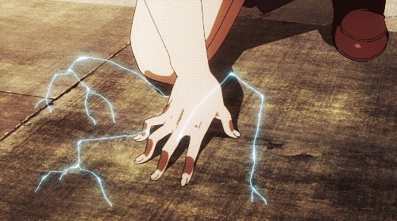

Shui Kong
Você sabia que nosso personagem, curte lutas? Veja mais sobre ele abaixo.
Em uma pequena vila situada às margens do Rio Yangtze, na antiga China, vivia Shui Kong, um jovem de
aparência comum, mas cujo destino estava longe de ser ordinário. A vila, cercada pela serenidade da
natureza, sempre acreditou nas antigas histórias dos Guardiões dos Cinco Elementos, guerreiros lendários que
protegiam o equilíbrio do mundo contra forças sombrias. Para Shui Kong, essas histórias eram apenas contos
de fadas que sua avó contava antes de dormir. No entanto, a tranquilidade de sua vida estava prestes a mudar
de forma dramática.
Certa noite, uma sombra negra encobriu a vila. O Império das Sombras, uma força obscura e misteriosa que há
muito se escondia nas trevas, lançou um ataque devastador. Os aldeões foram pegos de surpresa, e em meio ao
caos, Shui Kong descobriu algo extraordinário: ele possuía habilidades que desafiavam a lógica. Quando a
vila foi consumida pelas chamas e o desespero se instalou, Shui Kong encontrou um antigo pergaminho
escondido no altar de sua família. O pergaminho, coberto de símbolos enigmáticos, parecia indicar um caminho
para um poder maior e uma missão urgente.

Determinando a entender seus poderes e cumprir o que parecia ser um chamado divino, Shui Kong fugiu da vila
destruída e iniciou uma jornada pelos vastos territórios da China. Seu caminho o levou a mestres de artes
marciais que ensinavam o controle dos elementos: Terra, Água, Fogo, Madeira e Metal. Cada mestre forneceu
não apenas habilidades, mas também sabedoria sobre os elementos e sua importância para manter o equilíbrio
do mundo.
Durante suas andanças, Shui Kong encontrou Mei Lin, uma guerreira de espírito indomável que buscava vingar a
perda de sua família para o Império das Sombras, e Li Wei, um sábio de aparência idosa, mas de conhecimento
profundo sobre as forças ocultas que ameaçavam a terra. Com suas novas alianças, Shui Kong começou a
entender que seu papel não era apenas dominar os elementos, mas unir as forças do bem contra uma ameaça que
se estendia além de sua compreensão.

A jornada de Shui Kong o levou a confrontar seus próprios medos e inseguranças. A cada batalha, a cada
desafio, ele percebeu que o maior obstáculo a ser superado era seu próprio coração. As forças do Império das
Sombras estavam reunidas para um ataque final, planejando uma catástrofe que poderia destruir a harmonia dos
cinco elementos e mergulhar o mundo em um caos eterno.
No clímax da batalha final, Shui Kong enfrentou o líder do Império das Sombras em um duelo épico. Utilizando
o controle dos elementos que havia aprendido e a força dos aliados que conquistou, Shui Kong conseguiu
restaurar o equilíbrio e repelir a ameaça. Mas a verdadeira vitória não foi apenas sobre o inimigo externo;
foi sobre a descoberta de seu próprio poder interior e a realização de que, como Guardião, ele tinha o poder
de moldar o destino.

Com o Império das Sombras derrotado e a paz restaurada, Shui Kong voltou ao lugar onde tudo começou, mas agora como um líder reconhecido e um símbolo de esperança. A lenda dos Guardiões dos Cinco Elementos voltou a ser contada, não apenas como uma história antiga, mas como uma realidade vivida por um jovem que encontrou seu verdadeiro propósito e salvou o mundo de uma escuridão iminente.